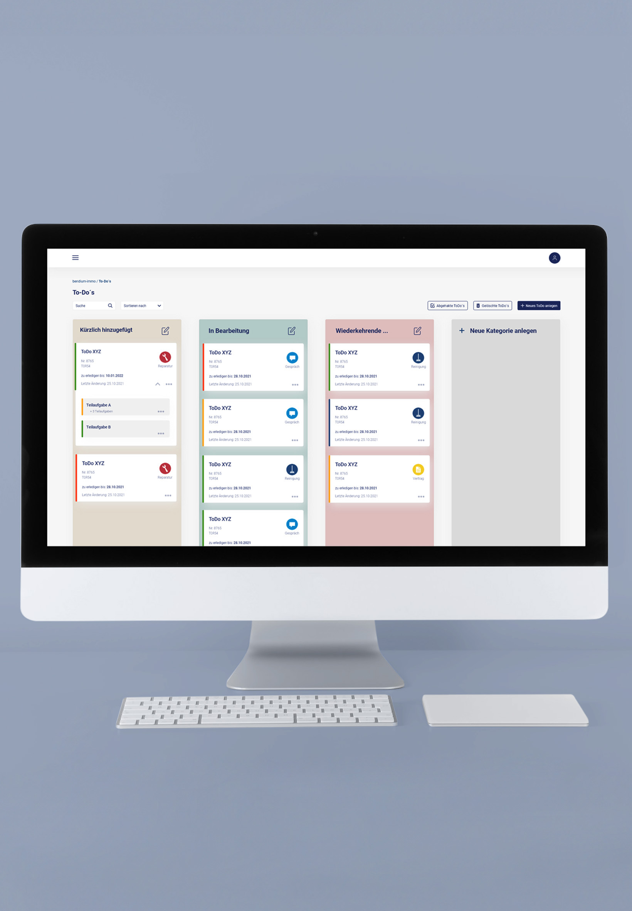
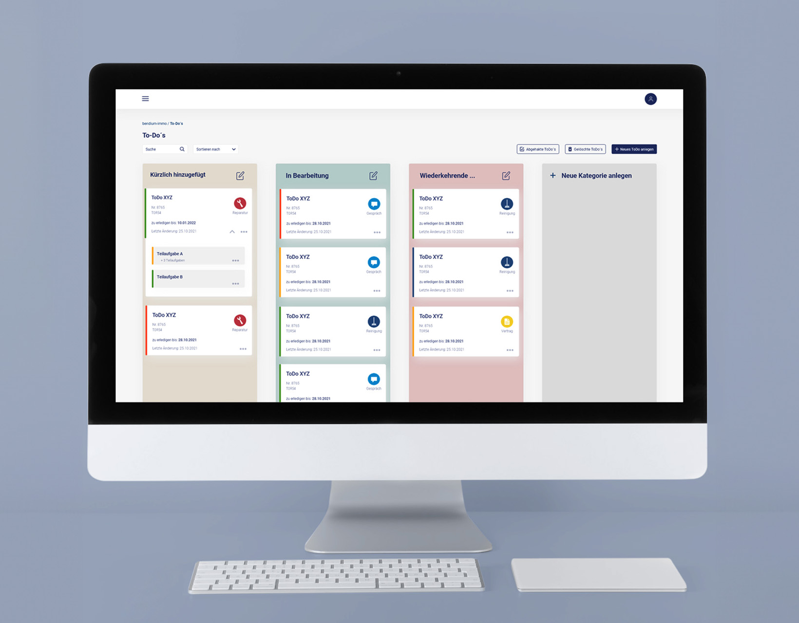

2022
Hochschulprojekt - Webapplikation für eine Immobilienverwaltung
Im Projektsemester habe ich an einer Web-Applikation für eine
Immobilienverwaltung gearbeitet. Das Projekt besteht aus vielen Modulen, die miteinander
verknüpft sind. Meine Gruppe widmete sich der ToDo-Anwendung. Das Modul unterstützt den Nutzer bei
der Aufgabenplanung und dient als Dokumentation aller Abläufe und Notizen.
Mein Aufgabenbereich bestand darin, einen klickbaren Prototypen mit Adobe XD zu erstellen.
Dieser sollte die gewünschten Funktionalitäten beinhalten und eine intuitive Steuerung bieten